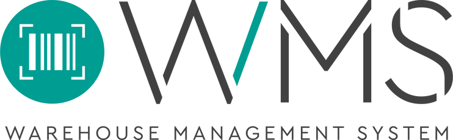

La importancia de la implementación de un Software para la Gestión de Almacenes
Un Sistema de Gestión de Almacenes es una aplicación de software destinada a dar soporte a las operaciones diarias de un almacén.
Es un programa que permite la gestión de tareas como el seguimiento de los niveles de inventario y la ubicación de existencias y que tiene como objetivo garantizar el correcto y continuo suministro de producto,
asegurar la disponibilidad de los en lugar correcto y existentes para salvaguardar los servicios de almacenamiento de forma ininterrumpida y proporcionar la información necesaria para controlar eficientemente el
movimiento de materiales dentro de un almacén, desde su entrada hasta su salida y entrega al cliente, pasando por todos los procesos intermedios que la organización tenga.

Funcionamiento del WMS
Software modular integrable y parametrizable que controla inventarios mínimos y máximos, mercancía, espacios, equipos, mano de obra, tareas, movimientos y demás recursos de gestión de almacenamiento.